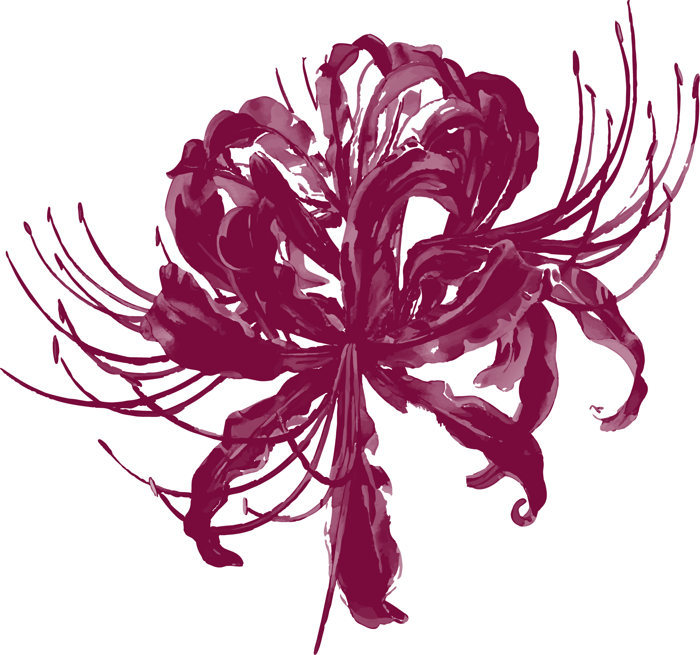
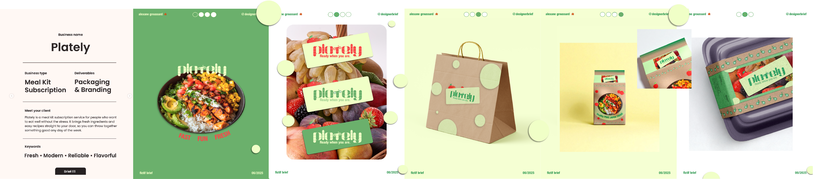
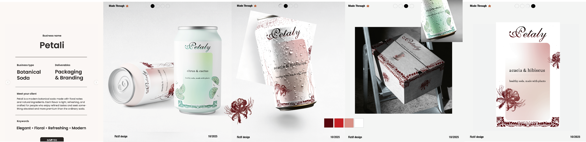

Mon rôle :
Directrice artistique
Création d'identités visuelles à partir de briefs fictifs pour apprendre à traduire une idée en un univers graphique complet. L'objectif était de construire des images de marque uniques et reconnaissables, en travaillant aussi bien sur le logo que sur la déclinaison des supports.
Une enseigne de thé élégante et dans le self-care.
Plately est une marque de livraisons d'ingrédients-prêts-à-cuisiner fun et arrangeante, dont la cible sont les unités familiales et les jeunes actifs.

Le contraste entre illustrations ornementales et pureté du blanc évoque un produit sain, précieux et pétillant.
